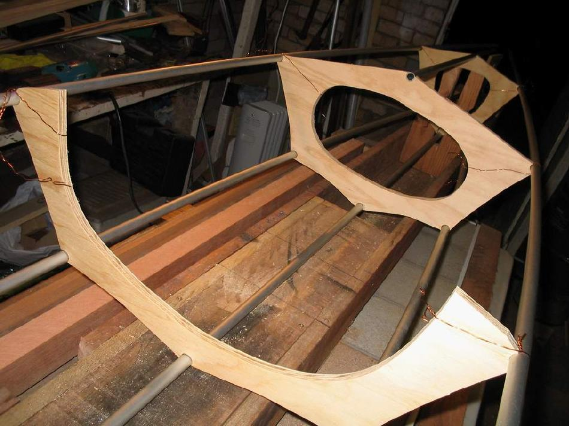

| Yarra LC By Les Archdall | Menu Previous Page Next Page |
|
 Les Archdall of Melbourne, Australia built this non-folding Yarra LC. It's an an open cockpit (Washboard) version of the Yarra. The larger cockpit allows easier entry/exit, and better access to gear storage. The upper portion of cross section 4 is "open" to accept the large coaming. Otherwise, the Yarra and Yarra LC share the same offsets and spacing. Les built his frame using wood / aluminum construction. |
|